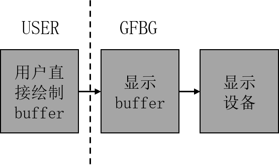
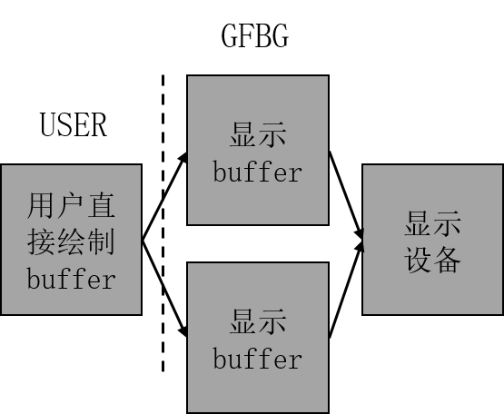

3. GFBG功能描述¶
3.1. 体系结构¶
应用程序基于Linux系统使用GFBG，GFBG体系结构如下图所示。

图 3.1 GFBG体系结构¶
3.2. 标准功能与扩展功能¶
3.2.1. 标准功能¶
GFBG支持以下的 Linux Framebuffer 标准功能：
物理显存映射到或者解除映射到虚拟内存空间中，允许用户通过虚拟地址访问物理显存，从而实现更高效的内存管理和操作。
像操作普通文件一样操作物理显存，支持通过文件接口对显存进行读写操作，简化了显存的使用方式。
设置硬件显示分辨率和象素格式，每个叠加图形层的支持的最大分辨率和象素格式可以通过支持能力接口获取，确保硬件显示的灵活性和兼容性。
从物理显存的任何位置进行读写及显示，支持对显存内容的任意位置进行操作，满足复杂显示需求的同时提供更高的自由度。
3.2.2. 扩展功能¶
GFBG新增以下扩展功能：
设置和获取叠加图形层的colorkey值。
设置当前叠加图形层的起始位置（相对于屏幕原点的偏移）。
设置和获取当前叠加图形层的显示状态（显示/隐藏）。
通过模块加载参数配置 GFBG 的物理显存大小和管理叠加图形层的数目。
设置和获取压缩模式的状态，目前仅支持非压缩模式。
设置/获取图形层刷新类型（0 buffer、1 buffer 与 2 buffer），目前仅支持0 buffer模式。
3.3. 扩展模式下的图形层刷新类型¶
GFBG 为上层用户提供了一套完整的刷新方案，称为 FB 的扩展模式。在对系统性能、内存、图形显示效果各方面综合衡量的基础上，可根据需要选择合适的刷新方案。该模式支持灵活的刷新策略，用户可以根据实际需求选择不同的刷新类型，例如 0 buffer、1 buffer 和 2 buffer 模式，以满足不同场景下的性能和显示效果要求。同时，扩展模式还提供了对刷新参数的精细化控制，确保在复杂的显示需求下能够实现高效、稳定的图形渲染。
3.3.1. 0 buffer（即CVI_FB_LAYER_BUF_NONE）¶
上层用户的绘制 buffer 即为显示 buffer。该刷新类型可以显著节省内存消耗，同时具备最快的刷新速度。然而，由于绘制 buffer 与显示 buffer 是同一个，用户在绘制过程中可能会直接看到图形的绘制过程，例如未完成的图形或中间状态的内容。这种模式适用于对内存和性能要求较高，但对绘制过程的视觉效果要求不高的场景。示意如下图所示。

图 3.2 0 buffer示意图¶
3.3.2. 1 buffer（即CVI_FB_LAYER_BUF_ONE）暂不支持¶
显示 buffer 由 GFBG 提供，因此需要一定的内存。该刷新类型是对显示效果和内存需求的一种折中考虑。它通过在绘制 buffer 和显示 buffer 之间引入一个缓冲区，避免了绘制过程中直接影响显示内容的问题，从而提升了显示效果的稳定性和一致性。然而，由于需要额外的内存来存储显示 buffer，因此会增加内存的使用量。此外，在某些情况下可能会出现锯齿现象，这需要根据具体的应用场景进行权衡和优化。示意如下图所示。
{kind=link}

图 3.3 1 buffer示意图¶
3.3.3. 2 buffer（即CVI_FB_LAYER_BUF_DOUBLE）暂不支持¶
显示 buffer 由 GFBG 提供。与前面的刷新类型相比，该模式需要占用最多的内存资源，但能够提供最佳的图形显示效果。通过引入双缓冲机制，确保了显示内容的稳定性和一致性，同时避免了绘制过程中对显示内容的直接影响。这种模式适用于对显示效果要求较高的场景，例如需要高质量图形渲染或复杂动画的应用。示意如下图所示。
{kind=link}

图 3.4 2 buffer示意图¶
3.3.3.1. 图形层压缩 暂不支持¶
图形层压缩功能是指图形层能够接收硬件压缩的数据，并基于这些压缩数据进行解压显示。当显示 buffer 的数据未发生变化时，图形层每次都会加载压缩后的数据进行解压显示。启用压缩功能的图形层可以有效降低总线的传输带宽，但需要额外分配一帧压缩数据所需的内存空间。通过这种方式，图形层压缩功能在保证显示效果的同时，能够显著优化系统性能，尤其是在高分辨率和高刷新率的显示场景下，减少了数据传输的压力。此外，该功能还可以在一定程度上降低系统功耗，使其更适合嵌入式设备和移动设备等对功耗敏感的应用场景。然而，需要注意的是，启用压缩功能可能会增加系统的复杂性，并对硬件和软件的兼容性提出更高的要求，因此在实际应用中需要根据具体需求进行权衡和选择。 典型的图形层压缩buffer示意图图下图所示。

图 3.5 图形层压缩buffer示意图¶